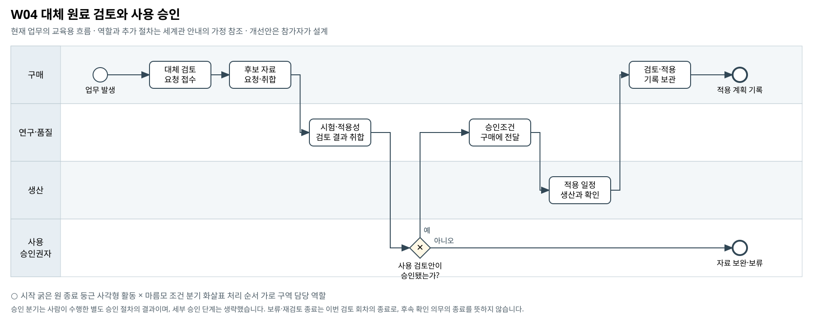

대체 원료 검토와 사용 승인
단일 공급처 의존을 줄이려면 대체 후보의 어떤 정보와 검토 절차부터 갖춰야 하는가?
BPMN 2.0 편집 원본 · 도식 크게 보기 · 8개 도식집 PDF


승인 분기는 사람이 수행한 별도 승인 절차의 결과이며, 세부 승인 단계는 생략했습니다. 보류·재검토 종료는 이번 검토 회차의 종료로, 후속 확인 의무의 종료를 뜻하지 않습니다.
기존 자료의 단초
- 데이터 사전은 Masil 더마 SKU에서 Corevia PL-02, 원료 M-B, 공급처 V-205로 이어지는 단일 소싱 관계를 제시한다.
- 원료 마스터, 구매·로트·투입 자료가 제공돼 원료와 제품의 관계를 검토할 수 있다.
- Celtonic Labs는 더마 활성원료 인수 후보로 제시되지만 특정 원료의 즉시 대체재로 승인됐다는 증거는 없다.
주최 측의 교육용 업무 가정
- [교육용 가정] 구매가 후보 자료를 요청하고 연구·품질과 생산이 수작업 검토한 뒤 지정 승인권자가 사용 여부를 결정하는 기본 절차를 추가했다.
- [교육용 가정] 대체 원료의 사용 승인권자는 원본에 명시되지 않아 '사용 승인권자'로만 표시했다. 품질 회수 권한이나 CEO 투자 승인권한을 임의로 전용하지 않는다.
- [범위] 시험 방법, 안전·규제 적합성, 평가 기준, 특정 공급처 선정은 제시하지 않는다. 여기 나열한 보완 항목은 선택 예시다. 필수 확장과 다른 부서 영향의 기준은 A01을 따른다.
미해결 지점
- 대체 후보의 규격·시험성적·규제 적합성·샘플 평가 자료가 없다.
- 구매·입고·투입의 시점 및 수량 불일치를 정리할 로트별 수불 근거가 부족하다.
- 대체 승인 기준·승인권자·시험 생산·변경관리 절차가 정의되지 않았다.
확장할 때 생각할 질문
- 대체 후보 비교 전에 어떤 기존 데이터부터 확인해야 하는가?
- 승인에 필요한 증거가 없을 때 현재 가능한 판단은 어디까지인가?
- 원료 변경이 생산·품질·납품 약속 중 어디에 영향을 주는가?
보완할 수 있는 데이터
- 가상의 후보 원료 규격·시험 문서와 데이터 출처
- 원료 수불 정정표·로트 대응표
- 참가자가 교육용 가정으로 정의한 사용 승인 절차와 검토 회신 기록
관련 원본 자료
- 00_common/Business_Process_Map.md
- 00_common/data_dictionary.md
- 00_common/approval_authority_policy.md
- 01_corevia/master/m_material_cv.csv
- 01_corevia/master/m_product_cv.csv
- 01_corevia/procurement/procurement_material_purchase_cv.csv
- 01_corevia/procurement/material_lot_master_cv.csv
- 01_corevia/production/production_material_consumption_cv.csv
- 02_masil/master/m_sku_ms.csv
- 03_aurora_group/funding/grp_investment_proposal_celtonic.md
그림의 관계가 원본 파일의 모든 연결키 제공을 뜻하지는 않습니다. 원본에서 확인한 관계와 추가한 매핑·가정을 구분하십시오.